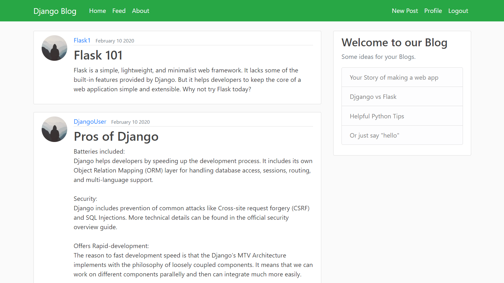
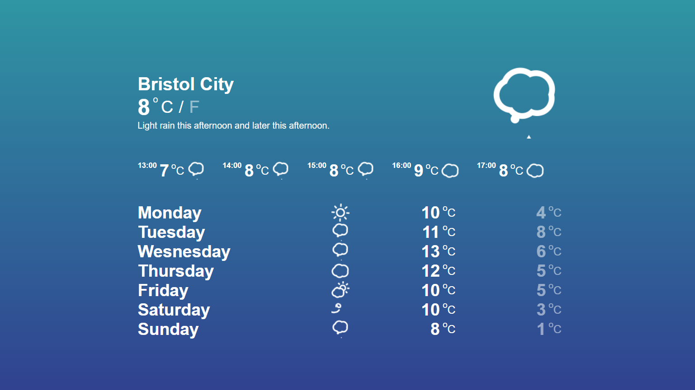
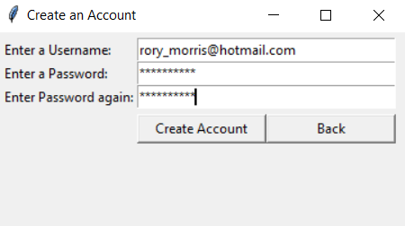

I am a multi skilled and passionate software developer with over 1 years professional experience as an ASP.NET(c#) developer, this involves maintaining a large scale Internet browser-based pensions and benefits administration system. I additionally have experience in writing automated unit tests to reduce bugs, test edge cases and enhance the accuracy of a project. I am highly motivated and have a huge will to learn demonstrated by the numerous technical skills I have learnt.
Personal Projects
IOS/Andriod Game (Cloud Hop)
- A solo developed comercial mobile puzzle game using Unity3D/C# and released across multiple platforms.
- Utilises object oriented programming to develop core features and systems of the game.
- Adept at going beyond the role of a developer to that of a user advocate, designer and tester.
- Created many assets using Krita to create a stylized cartoon look and bring the game to life.
- Developed for the joy of learing new skills technicle and creative
Pathfinder and Visualiser
- An application to find the shortest path between two nodes in a maze with Python 3 and then visualize the algorithm taking place using Pygame.
- Utilises Dijkstra’s pathfinding algorithm, implemented as a recursive function.
- Inspired by my fascination for algorithms, I took it onto myself to learn how Dijkstra’s algorithm worked and then implement a tool to demonstrate it in action.

Django Blog Web App
-Developed an app that allows users to create and post their own blogs to a web page.
- Utilises Django as backend and HTML5/CSS with bootstrap classes for the frontend.
- Working login and create an account page with authentications checks implemented.
- User profile page, profile picture and password reset fully achieved.
- Paginated blogs on the homepage.
Sudoku Solver and Visualiser
- An application that takes any Sudoku board and will solve it using a recursive backtracking algorithm, this is then visualized in pygame on Python 3.
- Sudoku board is completely playable at the users leisure.

Local Weather App
- An application that fetches and displays your local weather.
- Using your geo-code location it makes an AJAX call to a 3rd party API and fetches your local weather data.
- The data, including the current weather and future forecast, is then rendered.
- I did this using Javascript, CSS and HTML. It is also fully responsive and will adjust to screen size via media query.

Login GUI
- Using Tkinter in Python 3 I built a GUI application that allows users to create an account with a user name/password combination and then “login”.
- All account information is stored in a SQLite3 database.
- Regular expressions utilised to implement a working authentication system for the user's email and password check.
- Class based views used to create root and toplevel windows.
Get In Touch
If you like what you see please feel free to contact me with my details below.